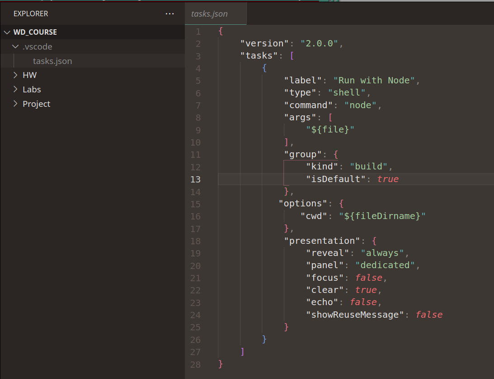

Keyboard shortcuts:
N/СпейсNext Slide
PPrevious Slide
OSlides Overview
ctrl+left clickZoom Element
If you want print version => add '
?print-pdf' at the end of slides URL (remove '#' fragment) and then print.
Like: https://wwwcourses.github.io/...CourseIntro.html?print-pdf
Created for
Created by
JavaScript
The most popular language

Тhe language no one can escape :)
Какво е JavaScript?
Какво е JavaScript?
В контекста на Front-End
Web Page/App
=
структура (HTML)
+
оформление (CSS)
+
поведение (JS)
Характеристики на езика
- Създаден за да бъде лесен за ползване дори от неопитни програмисти.
- Бурно развитие, което драстично промени първоначално заложените идеи.
- Скриптов език (интерпретиран и слабо типизиран)
Какво е общото между Java и JavaScript?
Отговор: "Каквото е общото между Car и Carnaval"
Какво можем да правим с JavaScript?
Какво можем да правим с JavaScript?
Извън контекста на Front-End
- Може да създаваме мобилни приложения за Android и iOS
- Може да се използва за създаване на desktop приложения, посредством платформата Electron. Такива са последните версии на Skype и много други: Apps built on Electron
Да създаваме и променяме динамично HTML елементи. (press CTRL+F5 to refresh)
See the Pen createDivsWithTimeout by Iva Popova (@webdesigncourse) on CodePen.
Да променяме динамично стила на елементите.(press CTRL+F5 to refresh)
See the Pen changeCSSWithTimeout by Iva Popova (@webdesigncourse) on CodePen.
Да променяме, до известна степен, поведението на браузера.
Да взаимодействаме, до известна степен, с браузера.
Да отчитаме действията на потребителя (клик, скрол и пр.)
test zone - do something
Да създаваме сложни и интерактивни анимации.
Да достъпваме множество API
APIApplicationProgrammingInterface
- APIs for manipulating documents
- APIs that fetch data from the server
- APIs for drawing and manipulating graphics
- Audio and Video APIs
- Geolocation API
- Device APIs
- Client-side storage APIs
- Google Maps APIs, Facebook APIs, YouTube APIs
Кратка история на JavaScript
Защо и как се създава?
1995
Първа война между браузерите
- Брендан Айк (Brendan Eich) създава за 10 дена прототипа на JavaScript, за браузера Netscape Navigator
- Оригиналното име е Mocha, което кратко след това променили на LiveScript. В последствие, поради предстоящия договор на Netscape със Sun Microsystems, се налага името JavaScript.
Project Code Rush - The Beginnings of Netscape / Mozilla Documentary
Ако ви е любопитно какво се случва с Netscape в следващите няколко години:
1997
JavaScript се стандартизира от Ecma International - ECMA-262 стандарт, под името ECMAScript.
2000
Douglas Crockford въвежда формат за обмен на данни - JSONJavaScriptObjectNotation
2005
- Jesse James Garrett въвежда терминът Ajax, публикуван за пръв път в неговата статия "Ajax: A New Approach to Web Applications"
- Това дава началото на множество JavaScript open source проекти: Prototype, jQuery, MooTools и мн.други.
2008
- Масирана конкуренция в разработката на JavaScript enignes.
- Google публикуват техния JS engine - V8, който се използва в разработката на множество server-side проекти.
2009
- Първа версия на Node.js (V8 базиран).
- ECMAScript 5 (ES5) стандарт, съдържащ значителни подобрения на езика.
2012
- Microsoft пускат TypeScript.
2014
- JavaScript е удостоен като "Програмен език на годината" за 2014, според индексът Tiobe.
2015
- ECMAScript 6 (ES6) - с множество нововъведения, започнали от ES5, езика се превръща в "сериозен" език за програмиране.
- След него, версиите започват да се именуват според годината. Например ES2015, ES2016 и т.н.
- Започва да се използва терминът ES.Next, който касае текущите бъдещи версии на стандарта. Разработва се от комитета с име tc33, който публикуват работата си в github: tc39 - proposals
JavaScript before ES6
Как да изпълним JS скрипт под браузъра?
Как да изпълним JS скрипт под браузъра?
В HTML файла
Като съдържание на елемента script
<script type="text/javascript">
// тук пишем само на JS
alert("JS Welcomes You!");
</script>
Допустимо е да слагаме елемента script, както в HEAD секцията, така и в BODY елемента!
В отделен, js файл
Включваме външния .js файл отново чрез елемента script, но задължително добавяме и src атрибут, в който указваме пътя до файла!
<script type="text/javascript" src="myFirstScript.js"></script>
Когато присъства атрибута src, то браузера игнорира съдържанието на елемента srcript
<script type="text/javascript" src="myFirstScript.js">
// този код никога няма да се изпълни
alert("JS Welcomes You!");
</script>
Къде да сложим script елемента
- Можем да вмъкваме колкото желаем
scriptелемента. - Допустимо е както в HEAD, така и в BODY секцията
- Не забравяйте, че браузера "чете" последователно елементите в един HTML файл, и кода в скрипт елемента ще се изпълни от браузера веднага при неговото срещане (освен ако не са използвани атрибутите
deferилиasync). - Браузъра няма да продължи с оставащите HTML елементи докато кода в даден script елемент не приключи работата си.
- Добри практики:
- в HEAD секцията, ако скрипта не взаимодейства със елементите в BODY и не блокира изпълнението.
- в края на BODY елемента, преди затварящият </body> таг.
Пример
<body>
<script>
alert('Where it the H1 element?')
</script>
<h1>Welcome to my page!</h1>
</body>
Как да изпълним JS скрипт под node.js чрез VSCode?
Как да изпълним JS скрипт под node.js чрез VSCode?
- Инсталирайте node.js
- Отворете VSCode със заредена папка WD_Course като workspace
- В папката
WD_Courseсъздайте папка.vscode(ако такава не съществува). - В папка
.vscodeсъздайте файлаtasks.jsonи в него поставете следното съдържание: .vscode/tasks.json - Трябва да имате подобна структура: 
- Сега вече може да стартирате всеки един JS файл директно чрез VSCode, като използвате комбинацията CTRL+SHIFT+B
{kind=link}
References
References
Brendan Eich - A Brief History of JavaScript
Ако искате да разберете повече за историята на езика от неговият създател - Brendan Eich (ще бъде по-разбираемо ако изгледате клипа след края на курса :) )
These slides are based on
customized version of
framework